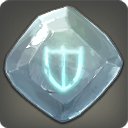

- DARK KNIGHT
- PALADIN
- WARRIOR
파이널 판타지14의 방어 직업군에 대해알아보자!
PAL
울다하 근위병단인 '은갑옷단'의 기사들은 충성을 맹세한 왕가를 지키기 위하여,
오랜 역사 속에서 기술을 연마해왔다.
백은 갑옷으로 무장하고, 대방패와 기사검을 쥐고 싸움에 몸을 던진 그들은
검술뿐만 아니라 호위술에도 뛰어나 주군의 생명을 기필코 지켜냈다.

그들 '나이트'의 전투 기술을 배우면, 철벽의 수호자로서 전장에 군림할 수 있을 것이다.